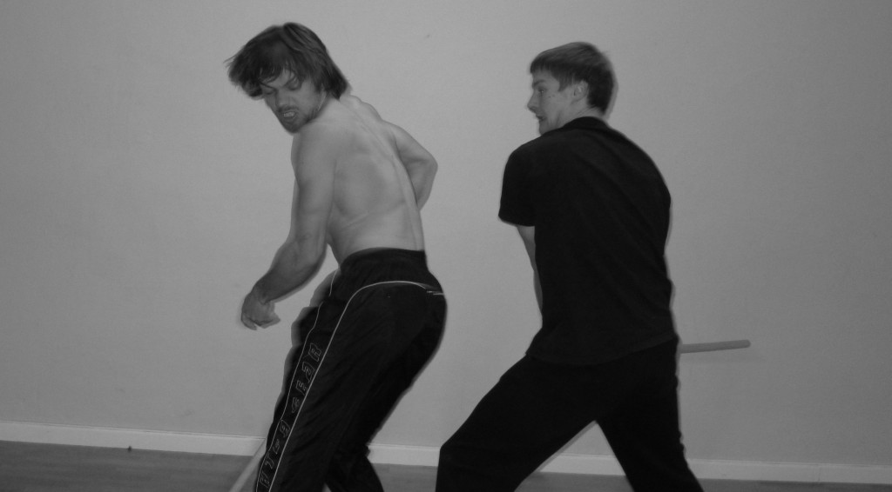

Prøverom: Macbeth med The Norwegian Shakespeare Company
- Dato:
- 09.01.2012 til 13.01.2012
- Start kl :
- 09:00
- Slutt kl :
- 16:00
- Adresse:
- Norsk Skuespillersenter, Welhavensgate 1, Oslo
 Det nyetablerte teaterkompaniet The Norwegian Shakespeare Company hadde fra 9. til 13. januar 2012 et forprosjekt på Norsk Skuespillersenter, under støttetiltaket «Prøverommet».
Det nyetablerte teaterkompaniet The Norwegian Shakespeare Company hadde fra 9. til 13. januar 2012 et forprosjekt på Norsk Skuespillersenter, under støttetiltaket «Prøverommet».
Tre skuespillere og en instruktør skulle sammen utforske Shakespeares Macbeth på originalspråket, med tanke på en full oppsetning i Norge høsten 2012.
"Med klare, selvpålagte begrensinger i forhold til antall aktører, forestillings-lengde, kostymer, rekvisitter og sceneografi ville vi undersøke om dette kunne være kreativt forløsende for å lage en konsentrert, intens, fysisk og innovativ versjon av dette meget kjente stykket.
Ved å utforske på gulvet, håpet vi å kunne kutte stykket ned til halv lengde ved ukens slutt, og samtidig også finne sceniske løsninger og formspråk.
Ikke bare klarte vi å kutte stykke ned til et arbeids-manus, utifra en klar tanke om psykologisk og følelsesmessig sannhet, men vi satte også klare føringer i forhold til uttrykksmåte og stil. Vi fant også langet mer humor og satire en forventet, og ikke minst at stykket i ennå større grad enn vi ante belyser ting i oss selv, våre forhold og det samfunnet vi lever i.
Sveinung Oppegaard og Brage Bang er dyktige scenekamp utøvere, og stykket stiller krav til både kampstil og kyndighet. Etter disse dagene er grunnlaget for flere av kamp-koreografiene lagt.
{kind=link}
På en organisk og enkel måte vet vi nå hva vi trenger av rekvisitter, kostymer, lys og lyd. Dette gjør søknadsprosessen lagt enklere.
En av dagene hadde vi invitert en perkusjonist, Terje Evensen, som nå ønsker å lage musikk til forestillingen.
Initiativet til workshopen var ved Elisabeth Dahl. Hun ønsket i tillegg til å legge grunnlaget for en forestilling, å bli kjent med skuespillere som har lignende teater-bakgrunn som henne for videre samarbeid. Vi ble raskt et ensemble som trygt og modig kunne utforske og eksperimentere sammen, mye takket være Instruktør Alfredo Michelsens tilnærming til prosess og materiale.
Vi hadde en liten arbeids-visning den siste workshop-dagen. Den ble filmet og fotografert. Tilbakemeldingen fra tilskuerne var positiv og oppmuntrende."
Oppdatering: Den ferdige produksjonen hadde premiere på Cafeteatret i Oslo 7. November 2012.
{kind=link}